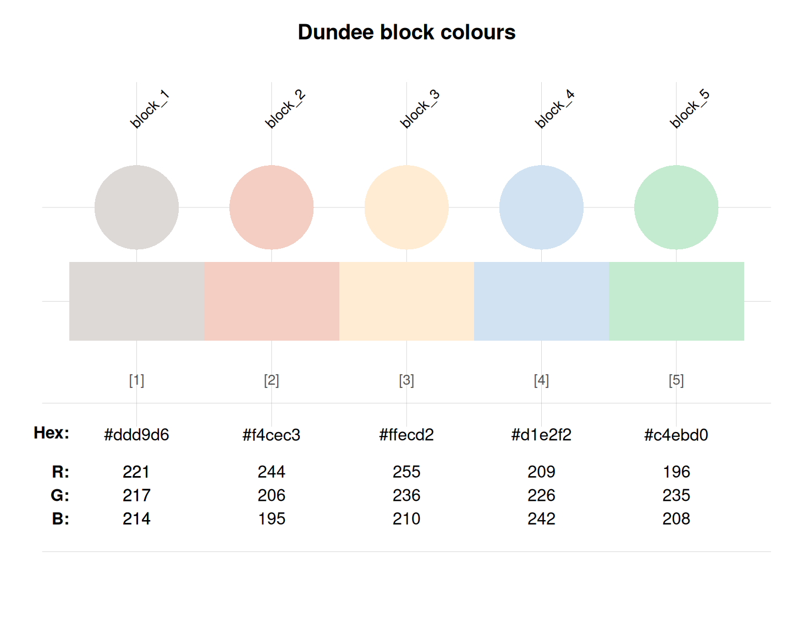

dundee_block provides the block colours
of University of Dundee, Scotland, UK.
Source
Colour definitions are based on Dundee's Brand colour palette.
Details
The block colours are intended for colouring larger flat spaces. They are subtle and can be used behind photography without overpowering the images. Normal usage might include posters and report covers, blocks of pull-out content within documents and digital applications, colour for graphs etc.The block colours are not intended to be used for typography, icons or fine line work, and should not be used as consistent background colour throughout a document (for example on multiple pages within a prospectus or report).
The block colours are
"block_1" (defined as PANTONE 427C, CMYK 8/4/9/10, RGB 221/217/214, HEX #ddd9d6),
"block_2" (defined as PANTONE 7520C, CMYK 1/26/21/0, RGB 244/206/195, HEX #f4cec3),
"block_3" (defined as PANTONE 7506C, CMYK 3/11/30/0, RGB 255/236/210, HEX #ffecd2),
"block_4" (defined as PANTONE 2707C, CMYK 20/6/0/0, RGB 209/226/242, HEX #d1e2f2), and
"block_5" (defined as PANTONE 2253C, CMYK 29/0/27/0, RGB 196/235/208, HEX #c4ebd0).
dundee_block uses the HEX colour definition.
Pantone and CMYK colours differ from RGB and HEX definition.
See also
dundee_core for the core colour of University of Dundee;
dundee_highlight for the highlight colours of University of Dundee;
dundee_background for the background colour of University of Dundee;
seecol for viewing and comparing colour palettes;
usecol for using colour palettes;
simcol for finding similar colours;
newpal for defining new colour palettes;
grepal for finding named colours.
Other Scottish university color palettes:
dundee_background,
dundee_core,
dundee_highlight,
edinburgh,
standrews_1,
standrews_2,
stirling_1,
stirling_2,
stirling_3
Examples
dundee_block
#> block_1 block_2 block_3 block_4 block_5
#> "#ddd9d6" "#f4cec3" "#ffecd2" "#d1e2f2" "#c4ebd0"
unikn::seecol(dundee_block, main = "Dundee block colours") # view colour palette
